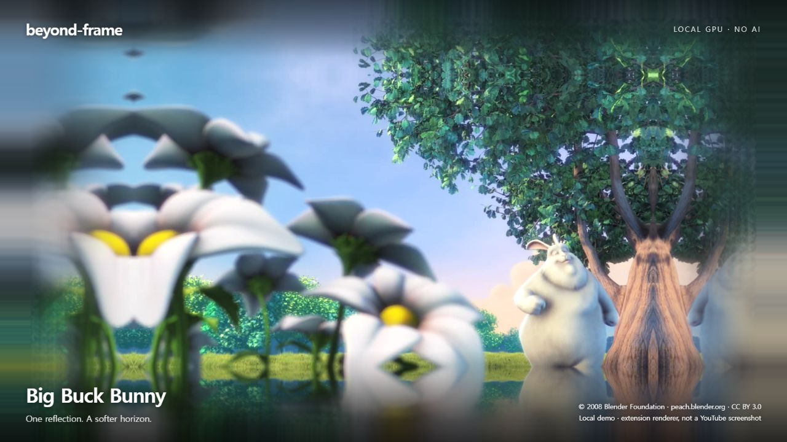
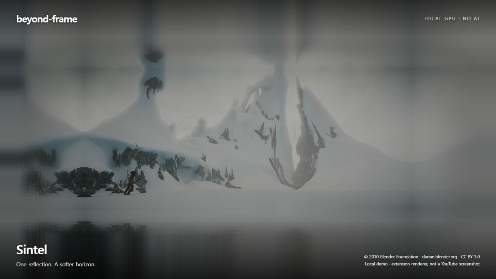
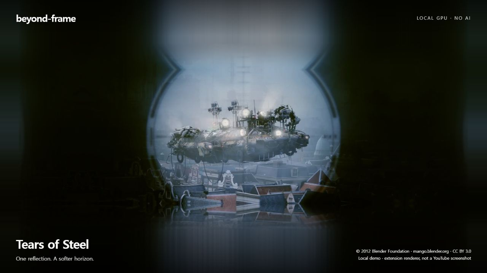

beyond-frame
영상의 색과 움직임을 화면 너머로.
확장 프로그램과 동일한 코드를 실제 공개 영상에 적용한 로컬 데모입니다. 유튜브 사이트에서 찍은 화면은 아닙니다.

Big Buck Bunny · 밝은 색감과 숲
Sintel · 설원과 넓은 화면비
Tears of Steel · 어두운 실사 장면같은 프레임 · 적용 전후
이미지 속 작품: Blender Foundation · CC BY 3.0. 작품별 출처와 라이선스